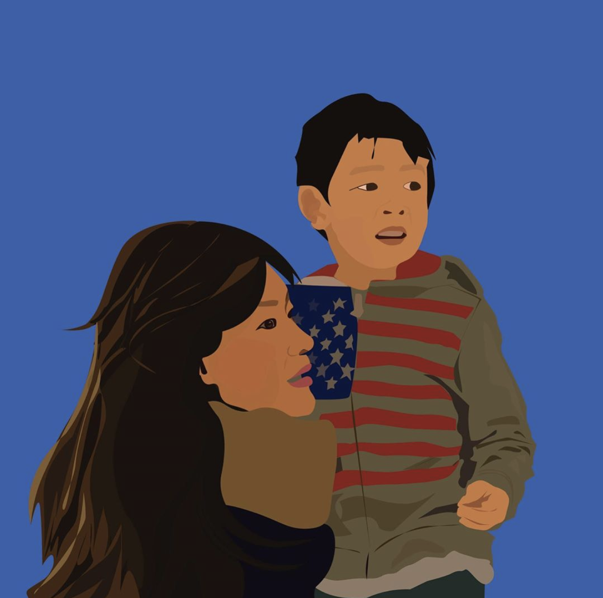
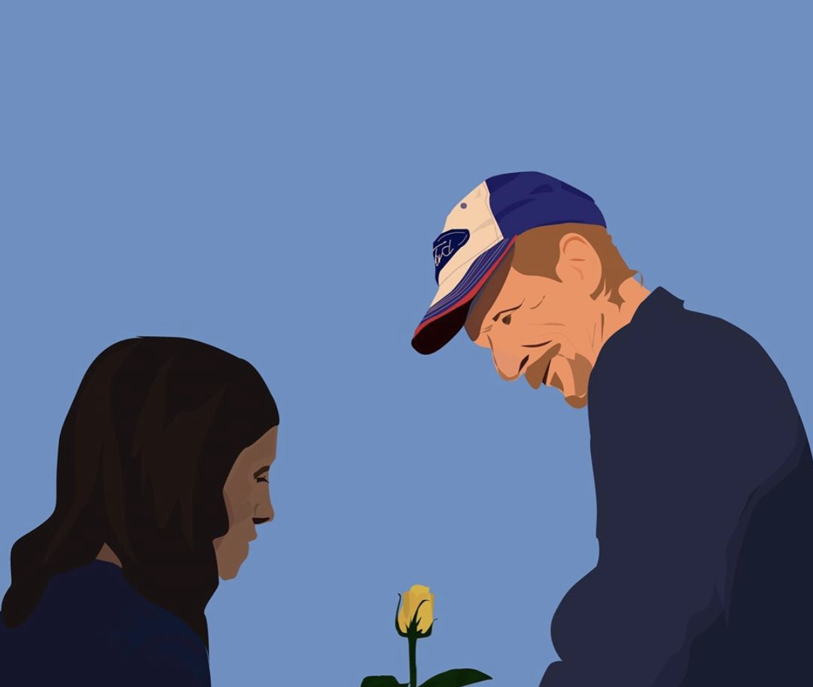
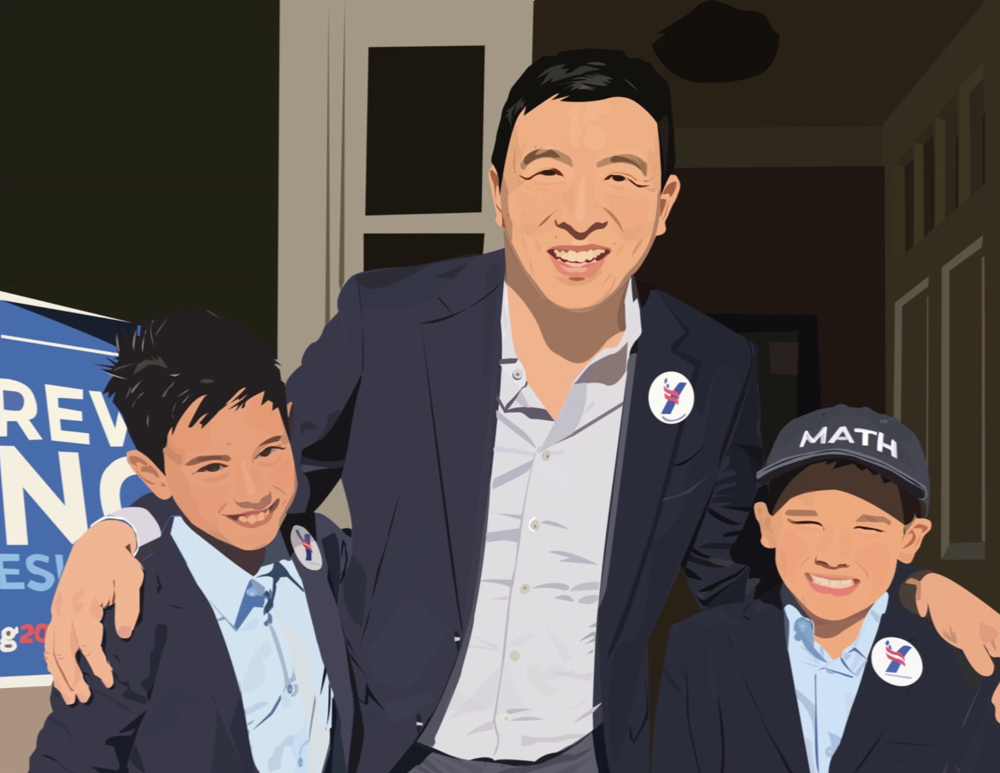

In support of #humanityfirst, the campaign slogan for Democratic candidate, Andrew Yang’s campaign, I started a twitter account called @ArtforYang. It started initially as an account for me to post general content that highlights what I considered humanity’s greatest moments during difficult times (such as the kindness Antonio Basco received after the El Paso shooting). However, once I began to create more art regarding Yang’s campaign, I changed the name to @ArtforYang as my followers increasinngly grew from Yang’s supporters.
I gained 86 followers from posting three pictures, reached 7,000+ people through a campaign-oriented hashtag #yanggang and had ~240 engagements on one post. El Paso did well on Instagram, with 50+ likes from strangers, but not on twitter (less than 10 likes).
The lesson I learned: Twitter is a more effective platform for political content. Instagram is more effective for emotional appeal to nonpolitical, aesthetic content. Instagram is more effective for companies and generally obtain higher engagement than the works from Twitter. Certain platforms are effective for certain types of content.
  